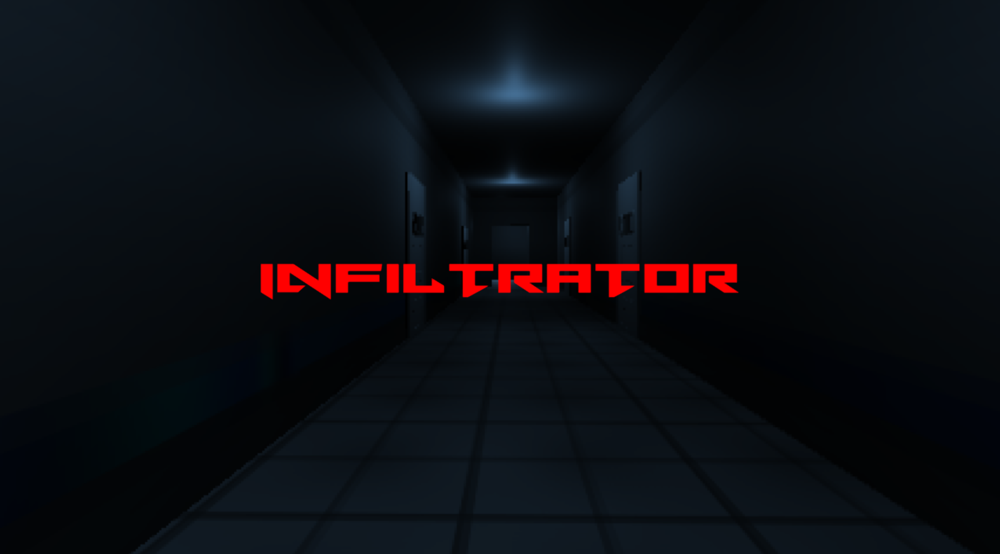

Infiltrator, Spring 2025
Unity, Enemy & Level Programmer, Level Designer, Team Co-Lead
A FPS, stealth game developed over the course of the Spring 2025 semester for a class in Indie Game Development. This project blends 2D pixel art and 3D assets to create a unique visual experience for the player.
Worked as the Enemy designer, Level Designer, and team co-lead among a team of 6.
This project allowed me to expand on my work with Strange Tower to create much more complex enemy AI. I implemented a Finite State Machine based behavior model, to allow the enemy to respond to the player's actions dynamically. To achieve this I was able to implement a number of systems, including: level wide enemy communication, differences between patrolling enemies and camera systems, a system that splits a single enemy's awareness of the player from the site-wide awareness, a sound system, and an investigation system where an enemy will scan an area around if they find anything suspicious, which depending on how alert they are can range from an open door to a dead body. Additionally I created dynamic sprite billboards, and a tool to intuitively create enemy patrol routes so that members of my team who are not experienced with code can easily add or change the path an enemy will take purely through visual elements.
You can find this game on itch.io here.
